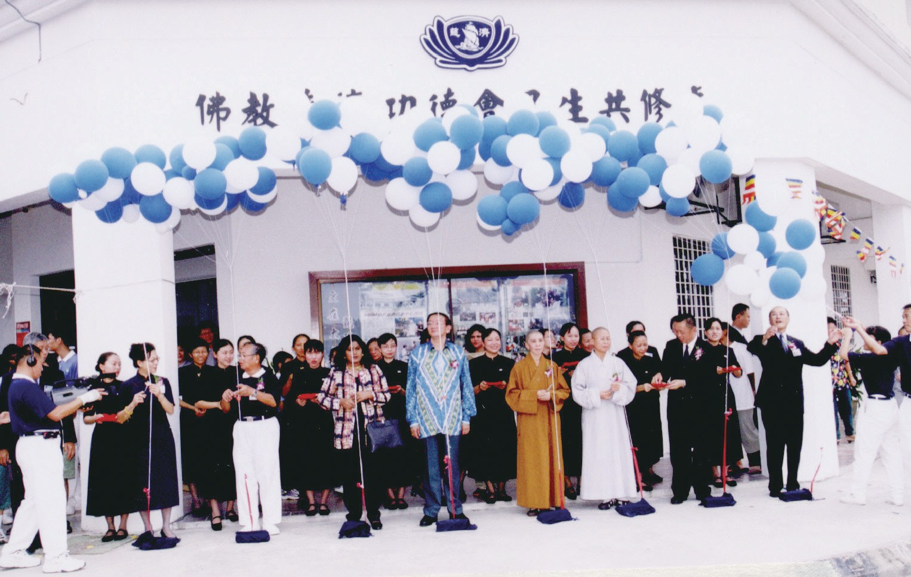
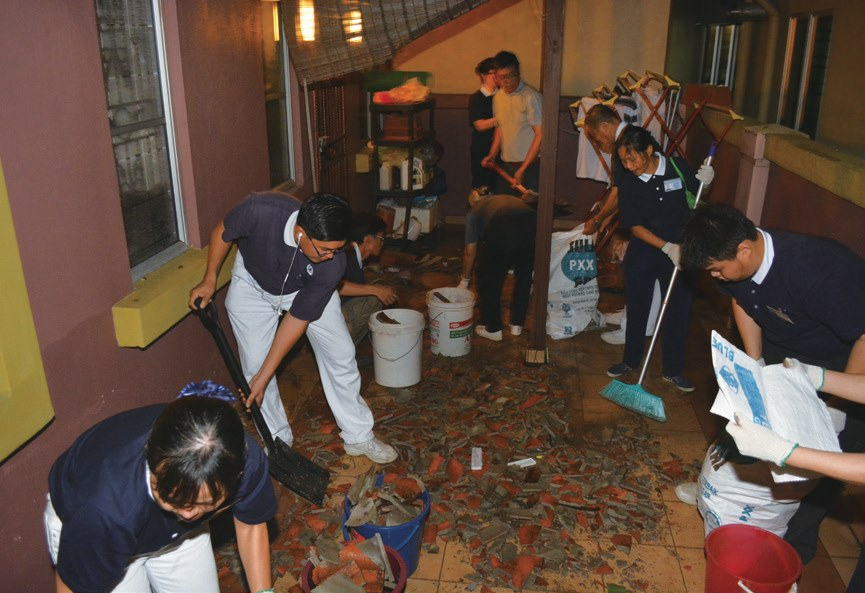
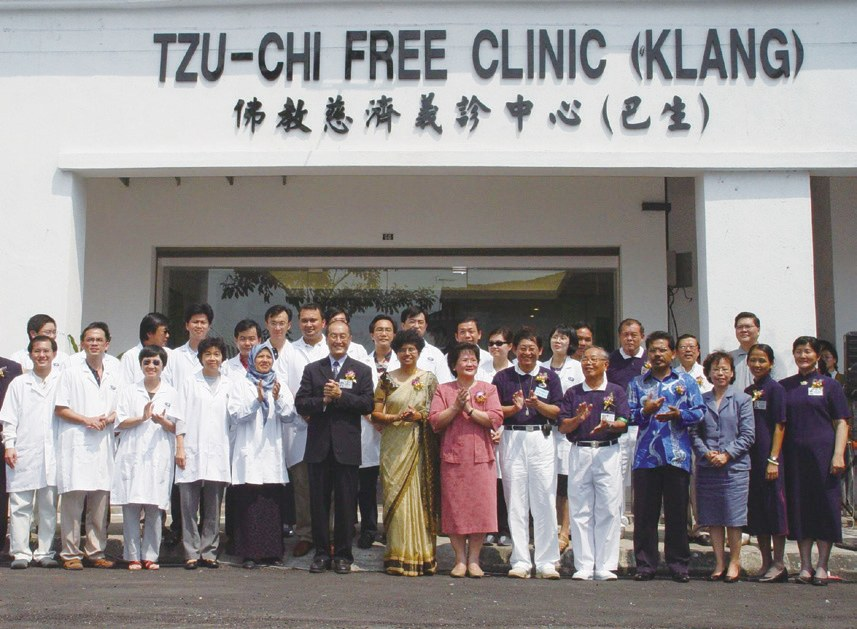
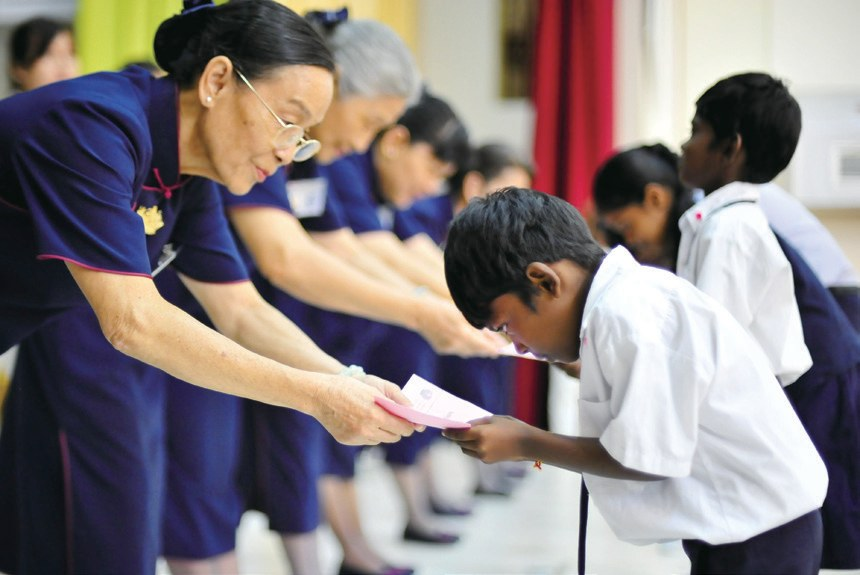
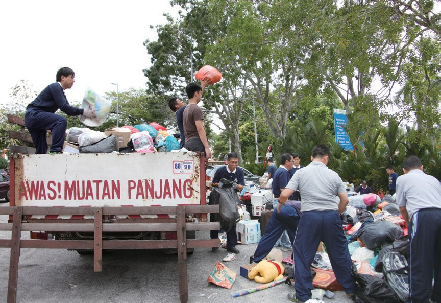
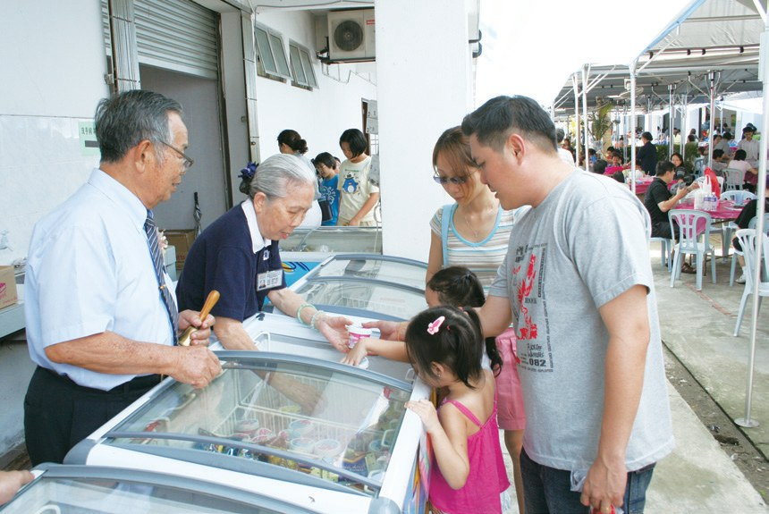

巴生支會
沒有會所的志工，後來有了家嗎？

先別急著下結論，讀完再說說你的想法～
這一篇講巴生支會：早期沒有會所，志工常常四處奔波，直到一對夫婦捐出了店鋪。
你會讀到大家口中的「爺爺」、走進難民區的義診中心，還有一位裝著義肢、從迷茫變忙碌的校車司機。
下面是原書的節錄，紅色底線是我們替你標出的轉折點。
讀之前：一個團體要長大，你覺得最需要什麼？
兩間店鋪
巴生慈濟早期，沒有固定會所。閱讀引導
巴生慈濟早期沒有固定會所，志工經常往返位在莎亞南的吉隆坡會所，雖然需要耗費許多路程時間，但大家有心承擔幫助苦難人。

都要跑好遠……
在探訪新古毛殘智障院後，陳銀娘看見院友身患苦難、病痛，啟發了心中的悲心，同時也對慈濟人真誠無私的付出而感動。
陳銀娘與丈夫、兒女商量，將家族名下位於聖淘沙的兩間店鋪捐出，作為共修處與活動之用，讓當地志工能有一個真正的「家」。

變成大家的家。

「……所以，人不要小看自己，只要有一個人發心，就能從一生無量，他們實在是發心菩薩。……」
上人期勉・p.693從四處奔波到有了會所；2024年，巴生為自己的靜思堂動土。
趕在午夜之前
屋頂被狂風吹走了。閱讀引導
2014年3月17日，巴生遭逢暴風雨，多處地區淹水，富豪苑受災最為嚴重，有二十七間房屋屋頂遭逢狂風破壞。慈濟人接獲訊息後，迅速投入救災，清理環境，提供熱食膚慰災民。

同時，位於巴生加埔七支半的百萬花園，整排十六間雙層排屋的屋頂也被狂風吹壞。在富豪苑協助清理的志工黃美玲（慈寰）獲悉後，連同八位志工趕在午夜之前到現場關懷及發放熱食。

志工又趕去了！
「感謝慈濟不分種族在社區給予協助，雖然不能彌補災民全部的損失，卻也讓災民減輕了不少負擔。」
村長哈芝莫哈默山西迪感激地說・p.695我們就走進去
難民、印裔孩子，都是家人。閱讀引導
2003年5月，巴生慈濟義診中心（簡稱義診中心）展開試辦，首次義診提供中、西醫及牙醫等服務。同年8月24日，義診中心正式啟用。

猜一猜閱讀引導
2019年起，義診中心也為難民看診。每週看診時間從三天，改為幾天？
「難民無法走出來，那我們就走進去，讓他們知道還有一群藍天白雲在身邊，能夠幫助他們。」
巴生志工們表示・p.697
我們就去！
課輔班學童學習進度不一，其中大多為印度裔學童，志工為了解決語言溝通的問題，2015年起特別招募印裔教師，及時關心學童的課業問題，參與的孩子也增至34位。
「……我的這一分願力，是來自慈濟志工所展現的大愛精神，不計膚色、不計種族的善行感動了我、鼓舞了我，我才會在退休後選擇投入課輔的師資團隊。」
課輔班教師瑪麗卡表示・p.698
自己也困難，還要幫人
從一間小木屋，到十三個環保站。閱讀引導
第一個環保回收站才剛起步，居民缺乏資源分類的觀念，很快就積滿堆放的雜物。
怎麼辦？
志工謝松利的父親，因為瞭解環保觀念刻不容緩，所以捐出沙白安南一間店屋，成立沙白安南環保站。
- 13個環保站p.702
- 六十多個環保點p.702
- 約兩千五百人次每月參與的志工p.702

從事校車司機的志工迪魯（本淨），也因為疫情及行動管制令使生活陷入困境，但仍然捐出1,000令吉幫助他人，為陷入困境的人付出一分心力。
還捐錢幫別人！
從迷茫到忙碌
巴生的爺爺、裝義肢的校車司機、當窗口的負責人。閱讀引導
2003年，林國華受證為慈誠。這位大善長者在慈濟活動中總是勇於承擔，不論是指揮交通、清掃工作，協助行動不便者，陪伴候診的孩子等等，都慇慇懃懃。年輕志工們都喜歡稱呼他為「爺爺」，因為他不只是林家的爺爺，也是巴生志工們的爺爺。

一起賣冰淇淋！
1959年出生的陳金樹，從小不愛讀書，性格急躁，中學二年級即輟學，在工地賺錢貼補家用；16歲那年離家，從馬六甲到巴生工作；24歲在碼頭工作，不幸意外被鐵條壓斷右腿，膝蓋以下截肢，因此裝置義肢。
「看到師兄們都可以去付出，我問自己為什麼不能去？比起院友，我行動自由，可以遊山玩水，還能賺錢奉養父母。……」
陳金樹說・p.706陳金樹脫離了非法賭博的工作，改行做校車司機；積極投入慈濟志工行列，並承擔社區組長。

還能開車付出！
做慈濟，讓他放下心裡的傷、身體的殘缺，從前是迷茫，現在是忙碌，慈善生活充實無缺憾。
2004年，洪金生被推薦為巴生慈濟負責人時，他曾因沒有行政經驗，覺得無法承擔重任，而打算婉拒。
「你就當個窗口，讓大家來詢問。」
大家鼓勵他・p.707「……上人說『做中學，學中覺』，我們遇到煩惱，就去做慈濟，做多了，煩惱自然就化解了。」
陳桂英與洪金生常和大家分享・p.708停一停：誰讓你記住了？閱讀引導
選一位你印象最深的人。沒有標準答案。
有人捐出店鋪，有人成了大家的爺爺，有人裝著義肢開車付出，有人自己困難還捐錢。哪一位讓你最有感覺？

一起回頭看看吧～
回望
依本章原文整理，每一條都標了原書頁碼。閱讀引導
背後原因
巴生怎樣有了家

小川一開始沒有會所，後來怎麼會有共修處、義診中心？
- 四處奔波
志工沒有會所，常常四處奔波。p.692
- 捐出店鋪
陳銀娘夫婦捐出兩間店鋪。p.692
- 一生無量
夫婦又捐出店面建義診中心。p.696
後續發展
巴生一路走來

小禾從立案補助照顧戶到升格支會，經過了多少年？
- 1993
巴生志工開始立案補助照顧戶。p.693
- 2002.8.31
巴生共修處成立。p.693
- 2003.5
升格為巴生聯絡處。p.693
- 2003.8.24
巴生義診中心正式啟用。p.696
- 2007.11.15
升格為巴生支會。p.693
- 2014.6
啟動聖淘沙課輔班。p.697
一份捐贈
一個家，多少用處
小禾林國華夫婦捐出、租出的店面，後來變成了什麼？
- 第一圈共修處
店鋪成了巴生共修處。p.693
- 第二圈義診中心
店面成了義診中心。p.696
- 第三圈書軒
會所一部分空間作為書軒。p.699
以上只整理本章寫到的事；書裡沒寫到的，我們不替它下結論。
回頭看讀前的選擇閱讀引導
陳銀娘夫婦捐出店鋪，讓志工有了「家」（p.692）；上人說只要有一個人發心，就能從一生無量（p.693）；陳金樹從迷茫變忙碌（p.706）。錢和地方都重要，一切從一個人發心開始。
為什麼第二次還是答應去了？
只有你自己看得到喔！
準備好了就一起出發～